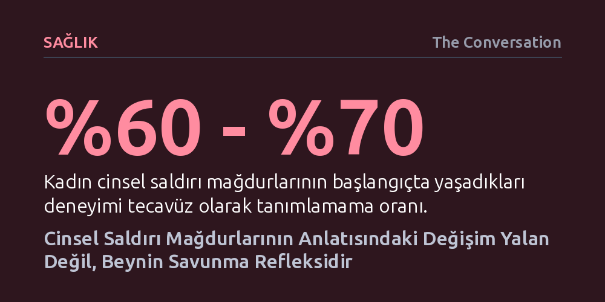

SAGLIK · The Conversation · 2026-10-09
Cinsel saldırı mağdurlarının yüzde 70'e yakını yaşadıklarını ilk anda tecavüz olarak adlandırmaz ve anlatıları zamanla değişebilir. Bu durum bir yalanın değil; beynin akut stres altında geliştirdiği nörobiyolojik savunma ve inkâr mekanizmalarının doğal bir sonucudur.
Bir saldırı mağdurunun ilk tepkilerine ya da zamanla değişen ifadelerine bakarak yalancılık hükmü vermenin bilimsel gerçeklerle bağdaşmadığını gösterir.

Bir cinsel saldırı iddiasının ardından mağdurun anlattığı olay örgüsü haftalar içinde değiştiğinde, kamuoyu bunu sıklıkla bir tutarsızlık ya da yalan belirtisi olarak yorumlama eğilimindedir. Cornell Üniversitesi'nde bir öğrencinin yedi erkek öğrenciye yönelik suçlamasında görüldüğü gibi, mağdurun başlangıçta olayı arkadaşına sadece kötü bir deneyim olarak aktarıp haftalar sonra resmi makamlara toplu tecavüz şikayetinde bulunması, şüpheleri hızla mağdurun üzerine çekebilmektedir.
Oysa araştırmalar, cinsel saldırıya uğrayan kadınların yüzde 60 ila 70'inin ilk etapta yaşadıklarını tecavüz olarak tanımlamadığını ortaya koymaktadır. Özellikle üniversite çağındaki gençler arasında yaygın olan bu tabloda, yaşanan ağır travma kötü seks ya da bir tür iletişimsizlik gibi hafifletici ifadelerle geçiştirilmeye çalışılır. Toplumun zihnindeki 'hemen polise koşan kurban' kalıbı ile gerçek hayattaki kurban deneyimi uyuşmadığında, saldırganı aklayıp mağduru yalancılıkla itham etmek en kolay reflekse dönüşmektedir.
Mağdurların olayı hemen adlandıramaması mantıksız bir çelişki değil, beynin hayatta kalmak için devreye soktuğu karmaşık bir biyolojik savunmadır. Cinsel saldırının hemen ardından kurbanlar, tıpta akut stres bozukluğu ve tecavüz travması sendromu olarak adlandırılan yoğun bir nörolojik sarsıntı yaşarlar. Bu evrede duygu, hafıza ve davranışları yöneten limbik sistem ile kortizol gibi stres hormonlarını düzenleyen hipotalamik-hipofiz-adrenal (HPA) ekseni olağanüstü bir uyarılma düzeyine ulaşır.
Bu iki sistem tetiklendiğinde vücut savaşma, kaçma, donakalma ya da boyun eğme tepkilerini devreye sokar. Beyinde meydana gelen bu biyokimyasal fırtına, mantıklı düşünme, planlama ve olayları sıraya koyup anlamlandırma kapasitesini fiilen baskılar. Zihin yaşadığı sarsıcı deneyimi sağlıklı bir biçimde işleyemediği için düşünceler, duygular ve bedensel duyumlar arasında kopukluk baş gösterir.
Yaşanan dehşeti hemen kabullenememek, zihnin dağılmamak ve dengesini korumak için sığındığı koruyucu bir kalkandır. Mağdurlar çoğu zaman hiçbir şey olmamış gibi gündelik hayatlarına devam etmek, hızla normale dönmek isterler. Bu inkâr refleksi, travmanın getirdiği ezici duygu dalgasını dışarıda tutarak bireyin benlik bütünlüğünü muhafaza etmesine yardımcı olur.
Bu süreçte en sık rastlanan tepkilerden biri de kurbanın suçu kendisinde aramasıdır. İnsanlar doğası gereği dünyanın adil ve güvenli bir yer olduğuna, iyi insanların başına iyi şeyler geleceğine inanmak isterler. Uğranılan şiddet bu temel inancı sarstığında, mağdur kontrol hissini yeniden kazanabilmek adına faturayı kendine keserek olayı tahmin edip engelleyebileceği yanılgısına kapılır. Toplumdaki önleme kampanyalarının çoğunlukla erkeklerin eylemlerine değil kadınların kendilerini nasıl koruması gerektiğine odaklanması da bu haksız suçluluk duygusunu derinleştirir.
Toplumdaki bir diğer yerleşik yanılgı, tecavüzün daima tanınmayan yabancılar tarafından karanlık bir sokakta gerçekleştirildiği inancıdır. Halbuki veriler, kadınların yüzde 80 ila 90'ının bizzat tanıdıkları kişiler tarafından saldırıya uğradığını göstermektedir. Bildik bir çevrede yaşanan bir şiddeti anlamlandırmak ve bunu hemen en ağır hukuki terimle etiketlemek psikolojik olarak çok daha zordur.
Dışarıdan bakan bir gözlemci, mağdurun ifadelerini ve davranışlarını sakin, mantıklı ve korunaklı bir zihinle tartar. Oysa kurban o kararları 'zihinsel ve fiziksel bir kasırga koşulları altında' vermiştir. Mağdurun yaşadıklarını açıkça adlandırması, savunma mekanizmalarını aşıp gerçeği dile dökebilmesi zaman gerektirir; bu zamana ihtiyaç duymak ise asla bir yalanın kanıtı değildir.